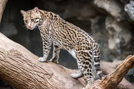

El ocelote (Leopardus pardalis) es un felino mediano, solitario y nocturno, distribuido en Mexico desde Sonora y Tamaulipas hasta la Peninsula de Yucatan.
Habita densas selvas humedas, bosques y manglares por debajo de los 1200 msnm dependiendo de cobertura vegetal para descansar. Es un depredador oportunista de presas menores a 1 kg, experto trepador y nadador, amenazado por la perdida de habitat y la caceria.